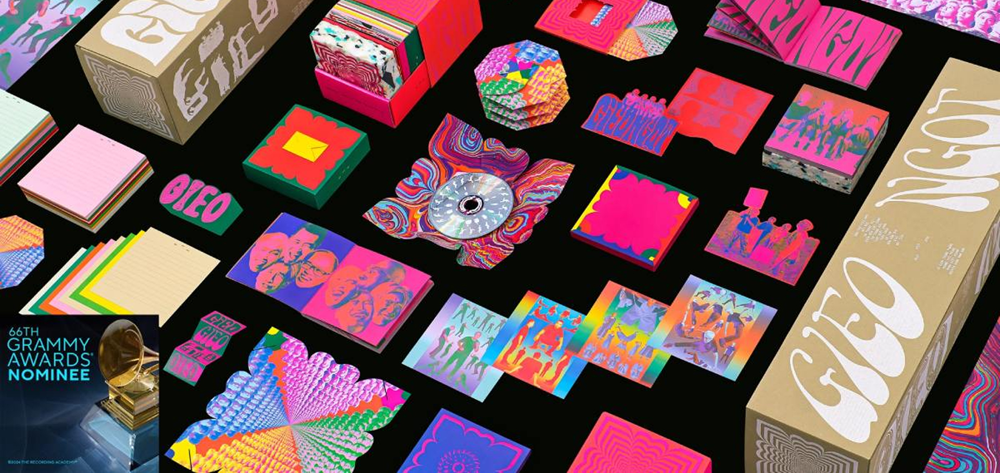

gieo - ngot

Duy Dao was the art director and lead designer for Ngọt band's Gieo album, creating a highly acclaimed, sustainable "time capsule" box set that earned a 2024 Grammy nomination for Best Boxed or Special Limited Edition Package.